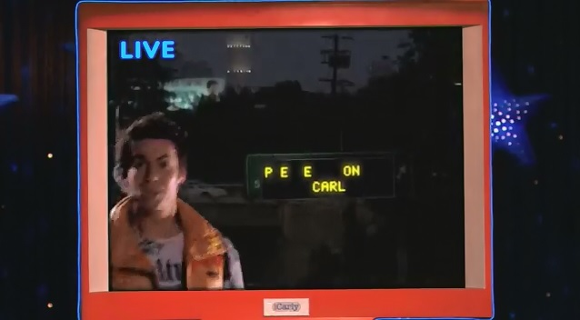

The Internet is Serious Business!
Home > Television > Nickelodeon > iCarly > Watching the Premiere of iCarly
I will admit that when I first started seeing the promos that Nickelodeon aired back in 2007 for a new show called iCarly, I wasn't very thrilled. By August/September 2007, I had been watching Drake & Josh regularly for probably a few months at the very least, and I had pretty quickly grown to like it, so when I heard that Miranda Cosgrove was going to star in her own show, even back then—with my extremely limited knowledge of the television industry—I was still able to conclude that Drake & Josh was ending because of iCarly. (Of course, now that I have followed the series throughout its entire five-year run, my attitude towards it has changed completely: it's one of my favorite shows from Nickelodeon, and I miss it dearly and am glad that TeenNick still airs reruns of it regularly, even as of March 2021.)
Our house got Internet access for the first time around November 2003, and I quickly became the fellow who my friends always thought spent too much time on the computer surfing the Web; it stayed that way for a few years, but I can remember noticing that, by 2007, the whole Internet thing had really gone mainstream with my peer group (i.e. kids and teenagers), so when an Internet-themed children's sitcom like iCarly appeared, it didn't really surprise me.
The main draw of iCarly for me early on was Miranda Cosgrove and Jerry Trainor, both of whom I knew from Drake & Josh (although it was rather odd for me during the premiere to see Miranda Cosgrove as Carly Shay instead of Megan Parker, and to see Jerry Trainor as Spencer Shay instead of Crazy Steve). At least one of the promos for the show encouraged viewers to submit videos of themselves doing something interesting, cool, or funny because the clip might actually be included in the show—an idea that I found to be very cool at the time, as it seemed to make iCarly more personal and less distant for us viewers.
The premiere actually consisted of the first episode, iPilot
, and the second episode, iWant More Viewers
, aired back-to-back on 8 September 2007. The episodes themselves, in my opinion, are not really that special; the pilot episode in particular is not even that memorable, besides the fellow who can squirt milk from his eye:
(Skip to the 20:45 mark in the first link to see that scene.)
The second episode is a little more memorable, especially that classic line, PEE ON CARL
:

Although I might not have been very happy at the time to see Drake & Josh end because of iCarly, after watching the two episodes of the premiere, I was interested in the show, and decided to stick along for the ride.


 All written materials on this Web site are my own, and all are released under the Do What the Fuck You Want to Public License Version 2.
All written materials on this Web site are my own, and all are released under the Do What the Fuck You Want to Public License Version 2.
This page last modified on 30 March 2021.